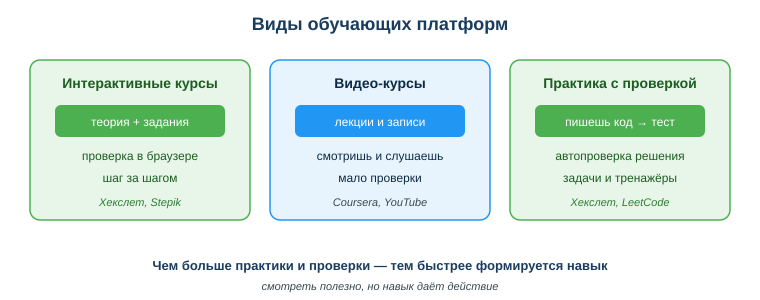
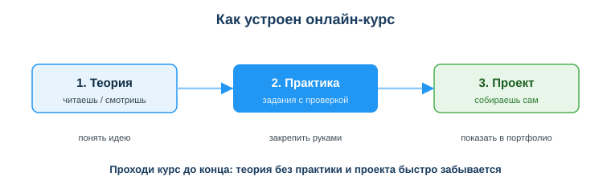

Дисциплина: Применение информационно-коммуникационных и цифровых технологий
Результат обучения: РО 2.2 — использование услуг веб-порталов и цифровых сервисов · Объём темы: 2 часа
Квалификация: 4S06130103 «Разработчик программного обеспечения»
Представь обычный рабочий день через год после выпуска. Ты — джуниор-разработчик, втянулся в проект, начал приносить пользу. И вот на планёрке тимлид говорит: «Со следующего спринта переезжаем на новый фреймворк». Этого фреймворка не было в программе колледжа. Никто не «прошёл» его за тебя заранее. У тебя есть примерно две недели, чтобы из состояния «вообще не знаю, что это» дойти до «могу написать рабочую фичу и не сломать сборку».
Что ты будешь делать? Паниковать бесполезно. Открывать случайные ролики на YouTube и смотреть их подряд — медленно и ненадёжно. Опытный разработчик в этой ситуации действует иначе: он находит хороший структурированный курс, быстро проходит теорию, обязательно делает практику руками и собирает маленький проект, на котором проверяет, что действительно понял. Через две недели он показывает команде рабочий результат — не потому что он «гений», а потому что он умеет учиться сам и знает, где брать качественное обучение.
Вот в чём суть профессии разработчика, о которой редко говорят на первом курсе: технологии в ИТ меняются быстрее, чем в любой другой инженерной области. То, что ты выучил сегодня, через три года не исчезнет, но обрастёт новым — новыми версиями языков, библиотеками, инструментами, подходами. Поэтому главный навык разработчика — это не знание конкретного языка, а умение учиться всю карьеру [4]. Диплом не закрывает обучение, он его открывает.
Образовательные платформы — это твой рабочий инструмент роста, такой же, как редактор кода или git. Они дают то, чего не даёт хаотичный поиск в интернете: структуру. Курс ведёт тебя по маршруту от простого к сложному, проверяет, что ты усвоил, и не даёт перескочить через важное. Тот, кто умеет выбрать платформу, выбрать курс под цель и довести его до результата, экономит недели своего времени — а в ИТ время прямо конвертируется в деньги и карьеру. Эта тема — про то, как стать таким человеком.
И ещё одна важная мысль для Казахстана. Цифровая экономика страны растёт, спрос на ИТ-специалистов высокий, а формальное образование физически не успевает за всеми новыми технологиями. Это значит, что умение доучиваться самостоятельно через онлайн-платформы для тебя — не «дополнительная опция», а способ оставаться востребованным на рынке труда РК и за его пределами.
После изучения темы ты сможешь:
Начнём с главного определения, которое стоит понять глубоко, а не просто заучить:
Ключевые слова здесь — структура и проверка. Чтобы почувствовать разницу, сравни два способа выучить, например, основы HTML.
Способ первый — «свободное плавание». Ты вбиваешь в поиск «как сделать сайт», открываешь десяток статей и роликов, прыгаешь между ними. Один автор начинает с одного, другой — с другого, третий использует устаревший приём. Никто не говорит тебе, что учить сначала, а что потом. Никто не проверяет, понял ли ты. В итоге у тебя в голове набор разрозненных кусков, которые не складываются в систему, и нет уверенности, что ты вообще что-то умеешь.
Способ второй — курс на платформе. Платформа даёт тебе выстроенный маршрут: сначала самое базовое, потом сложнее, шаг за шагом. После каждого блока теории — задание, которое надо выполнить, и система сразу проверяет, верно ли. Ты не можешь «проскочить» непонятое, потому что без выполнения задания не двигаешься дальше. В конце — проект, который собирает всё вместе. Результат: знания складываются в систему, и ты точно знаешь, что умеешь, потому что доказал это на практике.
Именно поэтому курс на платформе обычно эффективнее, чем разрозненные ролики или статьи без заданий. Платформа решает три проблемы самостоятельного обучения сразу: что учить (порядок тем), как закрепить (задания), проверил ли ты себя (автопроверка и обратная связь). Удобная аналогия: разрозненные видео — это как блуждать по незнакомому городу без карты; платформа — это маршрут с навигатором, который ведёт тебя к цели и предупреждает, если ты свернул не туда.
Важно не путать платформу с «складом видео». YouTube — это огромная библиотека роликов, но это не образовательная платформа, потому что в ней нет ни выстроенного маршрута, ни проверки. Ролик может быть отличным, но он — отдельный кирпич, а не построенное здание. Платформа отличается тем, что выстраивает кирпичи в стену по плану и проверяет, держится ли кладка.
Платформы различаются не только содержанием, но и тем, как именно на них происходит обучение. Посмотри на схему «Виды обучающих платформ» (приложение А, assets/21_shema-vidy-platform.svg). На ней показаны основные типы — разберём каждый, потому что от типа напрямую зависит, насколько быстро у тебя сформируется навык.

Тип 1. Интерактивные курсы (теория + задания с проверкой). Это формат, где короткий блок теории сразу сопровождается практическим заданием, а система проверяет твой ответ. Ты не просто читаешь — ты постоянно что-то делаешь и получаешь обратную связь. Такой формат держит тебя в активном состоянии и не даёт «уплыть». Типичный пример — большинство курсов на Stepik с встроенными задачами и тестами.
Тип 2. Видео-курсы (лекции, мало проверки). Это формат на основе видеолекций. Преподаватель объясняет, ты смотришь. Проверки знаний здесь мало или нет вовсе. Плюс — можно увидеть, как опытный человек рассуждает и работает «вживую». Минус — очень легко впасть в пассивность: смотришь час за часом, кивая, но ничего не делаешь руками. Многие университетские лекционные блоки на Coursera построены так (хотя там обычно добавлены тесты и задания).
Тип 3. Практика с автопроверкой кода. Самый сильный для разработчика формат: ты сразу пишешь код в браузере или в своей среде, а система автоматически прогоняет его на тестах и говорит, прошёл ты или нет. Здесь теория минимальна, а основное время уходит на решение задач руками. Именно так устроено обучение на Хекслете и в практических треках Stepik. Этот формат быстрее всего формирует реальный навык, потому что ты с первой минуты делаешь то, что и будешь делать на работе, — пишешь и отлаживаешь код.
Чтобы ответить на вопрос из урока — какой тип быстрее формирует навык? — держи в голове простое правило: навык растёт пропорционально количеству действий, а не количеству просмотров. Поэтому по скорости формирования навыка порядок такой: практика с автопроверкой кода → интерактивные курсы → видео-курсы. Это не значит, что видео бесполезно: оно отлично объясняет идеи и контекст. Но если после видео нет практики, навык не закрепится.
Ещё один практический вывод из этой классификации: тип платформы должен соответствовать тому, что ты учишь. Хочешь научиться программировать — нужен формат с написанием кода (Хекслет, практика на Stepik). Хочешь понять концепцию или теорию (например, как устроены сети или что такое машинное обучение на уровне идей) — подойдёт и видео-курс. Ошибка — пытаться научиться писать код, только смотря, как это делает кто-то другой.
Теперь привяжем типы к конкретным платформам. Запомни таблицу — она поможет быстро ориентироваться, куда идти под какую задачу.
| Платформа | Главная особенность | Сильнее всего для |
|---|---|---|
| Хекслет | практико-ориентированное обучение разработке на русском, с автопроверкой кода | системного освоения профессии разработчика «руками» |
| Stepik | курсы по программированию и не только, много бесплатных, встроенные задачи | быстрого старта по конкретной теме, бесплатной практики |
| Coursera | курсы университетов и компаний, признаваемые сертификаты | теории, фундамента, документированных сертификатов |
| Документация + YouTube | бесплатно и актуально, но без структуры и проверки | точечного добора знаний, когда основа уже есть |
Разберём подробнее.
Хекслет (kz.hexlet.io). Это российско-казахстанская практико-ориентированная платформа для обучения разработке на русском языке. Главная её черта — обучение через код с автопроверкой: ты почти сразу начинаешь писать решения, а система проверяет их на тестах. Хекслет выстраивает не отдельные курсы, а целые профессии (например, «Веб-разработчик», «Python-разработчик») — последовательные маршруты из курсов и проектов. Это сильная сторона: тебе не нужно самому собирать программу обучения, она уже выстроена логически. Хекслет хорошо подходит, когда цель — системно и глубоко освоить направление, а не выучить одну мелочь.
Stepik (stepik.org). Платформа с огромным количеством курсов — по программированию, математике, анализу данных и многому другому. Её сильная сторона — много бесплатных курсов и встроенная практика: внутри уроков сразу есть задачи и тесты с проверкой. Stepik удобен, когда нужно быстро и бесплатно взяться за конкретную тему: «основы Python», «введение в SQL». Качество курсов разное (их делают и университеты, и отдельные авторы), поэтому здесь особенно важно уметь оценивать курс по критериям — об этом ниже.
Coursera (coursera.org). Международная платформа, на которой курсы публикуют университеты и крупные компании (Stanford, Google, IBM и другие). Её сильная сторона — академический фундамент и признаваемые сертификаты. Многие курсы построены вокруг видеолекций с тестами и заданиями, есть специализации и даже онлайн-степени. Coursera хороша, когда нужна теория и фундамент (например, основы машинного обучения, алгоритмы) или когда важен документ, который ценят работодатели. Минус для русскоязычного студента — большинство курсов на английском (хотя есть субтитры и часть переведённого контента), и многое доступно по подписке.
Документация и YouTube. Это не платформы в строгом смысле, но важная часть твоего обучения. Официальная документация (например, docs.python.org, MDN) — самый точный и актуальный источник по конкретному инструменту, к ней ты будешь обращаться всю карьеру. YouTube — бесплатные ролики и объяснения. Оба источника бесплатны и часто свежее учебников, но у них нет структуры и проверки: они хороши, чтобы добрать конкретную деталь, когда фундамент уже есть, и плохи как единственный способ выучить тему с нуля.
Практический вывод: эти инструменты не конкурируют, а дополняют друг друга. Типичная зрелая стратегия: системную основу взять на платформе с практикой (Хекслет / Stepik), фундамент и сертификат — на Coursera, а точечные детали добирать из документации и видео. Главное — понимать, что у каждого инструмента своя роль.
Платформ и курсов — тысячи. Чтобы не утонуть и не тратить недели на неподходящий курс, используй четыре критерия выбора. Это рабочий чек-лист, которым пользуются и опытные разработчики.
Критерий 1. Цель. Сначала ответь себе на вопрос: что конкретно я хочу уметь после курса? Не «всё про веб» и не «программирование вообще», а конкретный навык: «сверстать простую страницу на HTML/CSS», «написать скрипт на Python, который читает файл и считает статистику». Чем конкретнее цель, тем легче выбрать курс и тем заметнее результат. Размытая цель («хочу стать программистом») приводит к размытому выбору и брошенным курсам.
Критерий 2. Практика. Проверь, есть ли в курсе задания и проверка, а не только видео. Открой программу курса, посмотри первые уроки: дают ли тебе что-то сделать руками? Есть ли автопроверка или хотя бы задания с разбором? Если курс — это только лекции «послушай и запомни», навык от него вырастет слабо. Для разработчика практика — не дополнение, а основа.
Критерий 3. Актуальность. В ИТ знания устаревают. Проверь дату выхода или обновления курса, версию технологии, о которой он говорит, и отзывы. Курс по фреймворку трёхлетней давности может учить приёмам, которые уже не работают. Свежие отзывы подскажут, не «протух» ли материал и не сломались ли примеры. Особенно это важно на платформах с авторскими курсами (Stepik), где качество разнится.
Критерий 4. Уровень. Курс должен соответствовать твоему текущему уровню: новичок / средний / продвинутый. Курс «для продвинутых», взятый новичком, превратится в стену непонятных терминов, и ты бросишь. Курс «с нуля», взятый тем, кто уже всё это знает, — это потеря времени. Хорошие платформы прямо помечают уровень; ориентируйся на эту метку и на первые бесплатные уроки.
Полезный приём: пройди первый бесплатный модуль перед тем, как вкладывать время или деньги в весь курс. За один модуль ты почувствуешь, понятен ли язык автора, есть ли практика и твой ли это уровень. Это дешёвый способ проверить курс по всем четырём критериям сразу.
Разберём критерии на конкретном выборе. Цель — «основы вёрстки». Берём курс по HTML/CSS на Хекслете. Цель — конкретная и совпадает. Практика — есть автопроверка кода, ты сразу пишешь разметку. Актуальность — курс поддерживается и обновляется. Уровень — есть трек «с нуля», он подходит. Все четыре критерия сходятся → курс выбран обоснованно, а не наугад.
Любой хороший курс ведёт тебя по трём ступеням. Посмотри на схему «Как устроен онлайн-курс» (приложение Б, assets/21_shema-ustroistvo-kursa.svg): на ней показана цепочка теория → практика → проект. Это не случайный порядок, а проверенная логика формирования навыка. Разберём, зачем нужна каждая ступень.

Ступень 1. Теория — «понять идею». Здесь ты узнаёшь, что и почему. Что такое переменная, зачем нужен цикл, как работает тег. Теория даёт каркас понимания, без которого практика превращается в бессмысленное копирование. Но важно помнить: одна теория не создаёт навык. Прочитать, как ездить на велосипеде, — не значит уметь ездить. Теория — это необходимая, но недостаточная ступень.
Ступень 2. Практика — «закрепить руками». Здесь ты делаешь задания: пишешь код, решаешь задачи, и система (или ты сам) проверяет результат. Именно на этой ступени теория превращается в навык. Ты сталкиваешься с ошибками, учишься их читать и исправлять — а умение работать с ошибками и есть значительная часть мастерства разработчика. Если пропустить практику, теория быстро забудется: через неделю от прочитанного останется смутное «что-то про циклы».
Ступень 3. Проект — «собрать своё». Здесь ты соединяешь всё изученное в одну работающую вещь: маленький сайт, скрипт, приложение. Проект делает две важные вещи. Во-первых, он показывает, что ты умеешь связывать отдельные навыки, а не только решать изолированные задачки. Во-вторых, проект — это то, что можно положить в портфолио и показать работодателю. На собеседовании рабочий проект говорит о тебе больше, чем список пройденных курсов.
Главный вывод этой ступенчатой логики: нельзя выдёргивать только теорию. Самая частая ошибка новичка — пройти теорию (она «лёгкая» и приятная), почувствовать, что «всё понятно», и не сделать практику с проектом. В результате понимание есть, а навыка нет. Запомни формулу: теория без практики забывается, практика без проекта не складывается в умение. Полный маршрут — все три ступени.
Знать, где учиться, — половина дела. Вторая половина — как учиться, чтобы курс не был брошен на 10% и чтобы навык реально остался. Вот рабочие привычки эффективного обучения.
Привычка 1. Учись регулярно понемногу, а не «всё за ночь». Мозг закрепляет навык через повторение, распределённое во времени. Полчаса каждый день дают больше, чем восемь часов раз в неделю. Регулярность важнее интенсивности. Заведи маленькую ежедневную норму (например, «один урок в день») — её легче выдержать и она формирует устойчивую привычку.
Привычка 2. Делай практику, а не только смотри. После каждого блока теории — задание или код своими руками. Это противоядие от «насмотренности» (о ней — в 4.7). Правило простое: посмотрел — повтори сам. Даже если задание кажется лёгким, выполни его — именно в выполнении формируется навык.
Привычка 3. Закрепляй на своём мини-проекте. Прошёл блок — придумай маленькую задачу для себя и реши её вне курса. Выучил основы HTML — свёрстай свою страничку. Это переводит навык из «умею повторить за курсом» в «умею применить сам», а это разные уровни владения.
Привычка 4. Не бойся возвращаться к основам. Если на сложной теме всё «поплыло», часто проблема в шатком фундаменте. Вернуться и пере-укрепить основы — не слабость, а нормальная часть обучения. Опытные разработчики делают это постоянно.
Привычка 5. Доводи курс до конца, прежде чем брать следующий. Лучше один короткий курс, пройденный полностью с практикой и проектом, чем пять начатых и брошенных. Завершённый курс даёт навык и уверенность; брошенный — только чувство вины и иллюзию занятости.
Эти привычки держатся на самодисциплине — способности учиться без внешнего контроля. В колледже тебя подталкивают расписание и преподаватель; в самостоятельном обучении этого нет, и двигатель — только ты сам. Несколько приёмов, которые помогают: ставь маленькую ежедневную норму (легче не нарушать); учись в одно и то же время (привычка экономит силу воли); фиксируй прогресс (отмечай пройденное — видимое движение мотивирует); делай учёбу видимой целью, а не фоновым «когда-нибудь».
Стоит отдельно разобрать самую распространённую и самую коварную ошибку самостоятельного обучения — «насмотренность».
Допустим, ты прошёл курсы и чему-то научился. Как доказать это — себе, а главное, будущему работодателю?
Многие думают, что главное — собрать побольше сертификатов. Сертификат — это документ о прохождении курса. Он не бесполезен: показывает, что ты доводишь дело до конца, и иногда требуется формально. Но у сертификата есть слабое место: он подтверждает факт прохождения, а не реальное умение. Можно «пройти» курс, нажимая кнопки и подглядывая в ответы, и получить тот же сертификат, что и тот, кто действительно всё понял.
Поэтому опытный работодатель в ИТ чаще смотрит на проекты в портфолио, а не на стопку сертификатов. Проект — это твоя реальная работа, которую можно открыть, запустить, посмотреть код. Он показывает, что ты умеешь довести задачу до работающего результата — а именно это и нужно в работе. Стопка сертификатов без единого проекта вызывает вопрос: «прошёл — но умеешь ли?». Один аккуратный проект на эту тему отвечает наглядно.
Как подтверждать навык на практике:
Вывод для тебя: учись не ради «галочки» о прохождении, а ради работающего результата, который можно показать. Сертификат пусть будет приятным дополнением, но цель каждого курса — выйти из него с проектом или решёнными задачами в портфолио.
Чтобы обучение не расплывалось, цель полезно ставить по схеме SMART. Это пять требований к хорошей цели:
Пример SMART-цели: «За 4 недели пройти курс по основам HTML/CSS на Хекслете с практикой и сверстать одну свою страницу-резюме». Здесь есть конкретика, измеримость (курс + страница), реалистичный срок и значимость (страница пригодится в портфолио).
Под цель составь простой план. Рабочая схема плана на 4 недели:
Главное в плане — в нём обязательно есть практика и проект, а не только «посмотреть курс». План без проекта снова скатится в «насмотренность». Реалистичный план с ежедневной нормой и понятным результатом — это и есть мост от «хочу научиться» к «научился».
Сведём теорию к тому, зачем это лично тебе. Разработчику почти каждый месяц приходится осваивать что-то новое: библиотеку, версию языка, инструмент. Образовательные платформы — твой постоянный рабочий инструмент роста, наравне с редактором кода [4]. Умение быстро выбрать курс и довести его до результата — это конкурентное преимущество: ты не зависишь от того, есть ли «готовый курс» в компании, и осваиваешь новое сам.
В контексте Казахстана это особенно важно. Государство развивает цифровую экономику и поддерживает ИТ-образование; рамки цифровых компетенций (включая европейскую DigComp 2.2 [5], на которую ориентируются и казахстанские образовательные стандарты) прямо относят самостоятельное обучение через цифровые ресурсы к базовым цифровым навыкам гражданина. То есть умение учиться онлайн — это не только про карьеру разработчика, но и про твою цифровую грамотность как современного человека. А поскольку русскоязычные практико-ориентированные платформы (Хекслет) и бесплатные ресурсы (Stepik, документация) тебе полностью доступны, барьер входа минимален — всё зависит от твоей самодисциплины.
Пример 1 — выбор платформы под три разные цели. Тебе нужно: (а) системно освоить веб-разработку на русском с практикой; (б) бесплатно быстро взять основы Python; (в) получить признаваемый сертификат по основам машинного обучения.
Разбор: (а) — Хекслет: практико-ориентированное обучение разработке на русском с автопроверкой кода и выстроенными профессиями; (б) — Stepik: много бесплатных курсов с встроенной практикой, удобен для быстрого старта; (в) — Coursera: курсы университетов и компаний с признаваемыми сертификатами и сильной теорией. Видишь: под каждую цель — своя платформа, потому что у каждой своя сильная сторона.
Пример 2 — оценка курса по четырём критериям. Ты нашёл на Stepik курс «Веб-разработка». Как понять, брать ли его?
Разбор: проверяешь по критериям. Цель — слишком широкая («веб вообще»), это уже тревожный знак; уточни, что именно тебе нужно. Практика — открой программу: есть ли задачи и проверка или только видео? Актуальность — посмотри дату обновления и свежие отзывы (не сломались ли примеры). Уровень — есть ли пометка «с нуля» и понятны ли первые уроки. Лучший способ проверить всё сразу — пройти первый бесплатный модуль. Если после него понятно, есть практика и это твой уровень — курс подходит.
Пример 3 — разбор брошенного курса. Студент купил большой курс «всё про веб за 100 часов», посмотрел 10% и забросил.
Разбор: ошибки две. Первая — слишком широкая цель («всё про веб»): нет конкретного результата, к которому идёшь, поэтому мотивация быстро тает. Вторая — объём не под силу: 100 часов без промежуточных результатов демотивируют. Правильный следующий шаг: выбрать короткий курс под конкретную цель («основы HTML/CSS»), пройти его до конца с практикой, собрать маленький проект — и только потом брать следующий. Маленькие завершённые курсы дают навык и уверенность, большие незавершённые — только чувство вины.
Пример 4 — «насмотренность» в действии. Студент два месяца смотрит видеокурсы по программированию по три часа в день, но не написал ни строки кода. Жалуется, что «всё понимает, но не может ничего сделать сам».
Разбор: это классическая «насмотренность». Понимание чужого кода ≠ умение писать свой; навык формируется действием. Решение: переключиться на формат с практикой (Хекслет, задачи на Stepik) и ввести правило «после каждого урока — задание руками». Через две недели практики студент напишет больше, чем за два месяца просмотра.
Короткий чек-лист, которым можно пользоваться при каждом новом обучении:
Основная и дополнительная литература:
Нормативные источники РК:
Образовательные платформы (официальные сайты):
Документация и профессиональные ресурсы:
Международные рамки:
assets/21_shema-vidy-platform.svg. Показывает основные типы платформ по способу обучения: интерактивные курсы с проверкой, видео-курсы и практика с автопроверкой кода. Читай слева направо: чем больше в формате действий ученика, тем быстрее растёт навык.assets/21_shema-ustroistvo-kursa.svg. Показывает цепочку «теория → практика → проект». Читай как маршрут: каждая ступень опирается на предыдущую, и пропуск любой ломает результат (теория без практики забывается, практика без проекта не складывается в навык).Материал подготовлен на основе урока темы (urok.md) и приведённых в конце источников; он расширяет и углубляет содержание урока для самостоятельного изучения. Источники приведены главами и ссылками (без номеров страниц); нормативные акты — с реквизитами.
Разработал: преподаватель ИКТ, магистр управления и информационной безопасности Калиаскаров Д.А.
Материал одобрен к использованию в обучении решением Педагогического совета ТОО «Колледж Хекслет Казахстан».